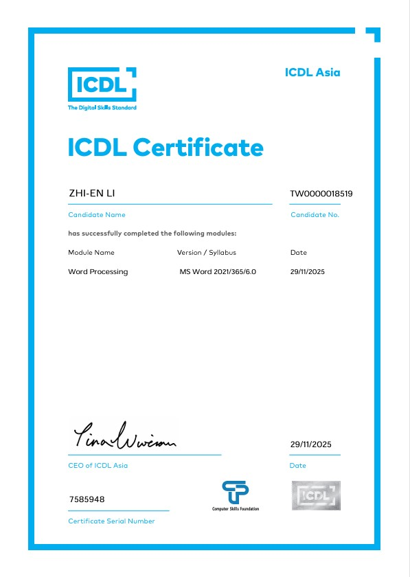
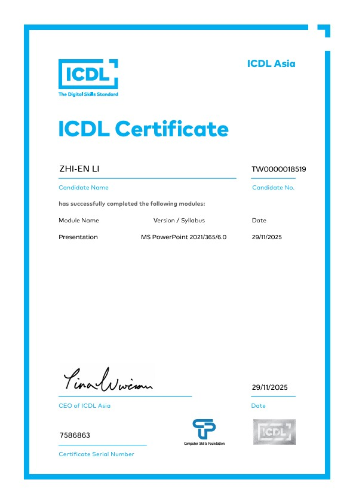
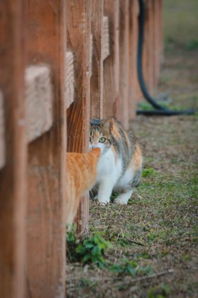
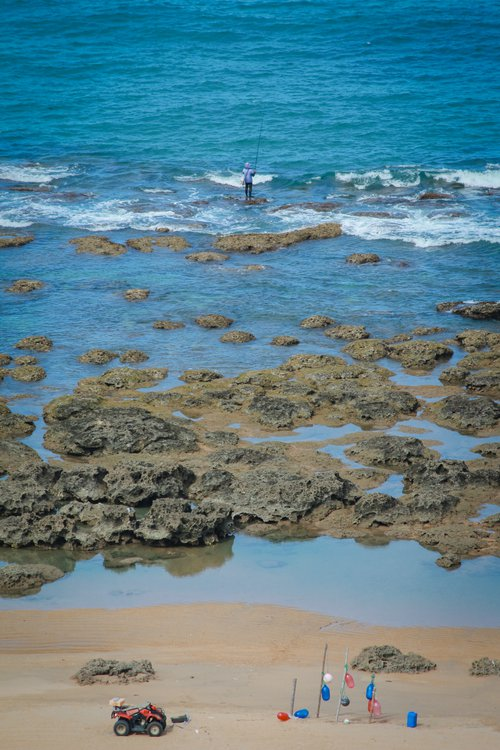

跳至主要內容
Welcome to my field notes
歡迎來到探索筆記
李志恩JERRY LEE · FIELD NOTES
目前位置：首頁
FIELD NOTES
DATAIMAGEARCHIVE
Portfolio / 2026
李志恩
Jerry Lee
在資料裡尋找線索，在鏡頭裡留下風景。
- Data Science
- LLM / RAG
- AI Agent
- Photography
拖曳或開啟目錄，從任一方向開始探索 ↗
01
01 / ABOUT ME
關於我
我的核心優勢：
- 熟悉程式開發，也具備文書處理與美編排版能力。
- 主動挖掘新技術與問題的解答。
- 重視細節，以耐心與責任感完成任務。
- 樂於協助他人，提供穩定可靠的團隊支援。
02
FIELD NOTES2026
02 / EXPERIENCE
工作經歷
潮州地政事務所
2025 屏東縣公部門暑期工讀，進行地籍資料整理、檔案校對與掃描，共 320 小時。
靜宜大學職涯發展暨產業促進處
協助活動、文書編輯、海報設計、資料歸檔與經費統計。
潮州地政事務所
2026 屏東縣公部門暑期工讀，協助地籍資料整理、檔案掃描與修復，共 320 小時。
03
03 / CERTIFICATE
ICDL 證照


- Word Processing
- Spreadsheets
- Presentation
04
04 / GRADUATION PROJECT · IN PROGRESS
病理科檢索問答
輔助系統
本專題結合 RAG 檢索問答與 AI Agent，協助醫院病理科快速查找流程、表單與儀器資料。使用者只要用日常語言提問，系統會自動判斷需求、搜尋相關文件，並附上資料來源。
- LLM
- RAG
- LangChain
- AI Agent
- Pathology
05
05 / PHOTOGRAPHY
攝影紀實
平常除了寫程式，最喜歡的就是拿起相機四處拍照。這對我來說不只是興趣，更是一種觀察生活的方法。


06
06 / DRONE DOCUMENTARY
空拍紀實：
瞰見屏東
大學通識課〈無人機生態影像解析〉的成果。身為屏東人，我想用不一樣的角度看看家鄉。
07